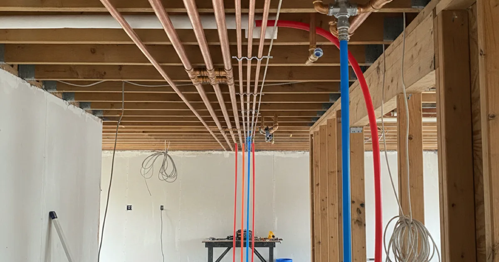
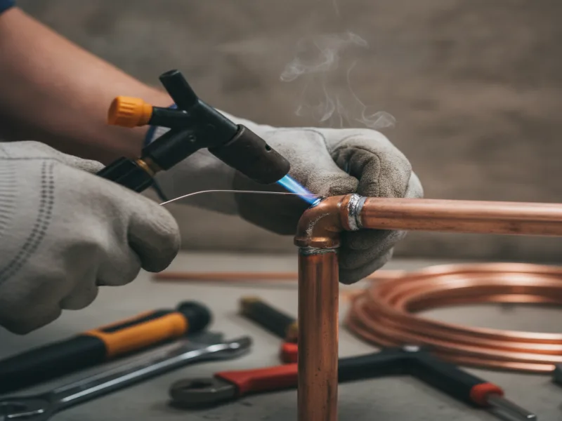

Repiping in Armonk, NY
When you've patched a third leak in six months, patching a fourth isn't the answer. We help you understand when repiping makes more sense than repeated repairs, and walk you through exactly what the process involves.
- Licensed & Insured
- Upfront Pricing
- 15+ Years of Experience
- Clean, Respectful Technicians

The repiping process
Repiping means replacing a home's supply lines instead of continuing to fix them one section at a time. We start by mapping out your existing plumbing so we know exactly which lines need to go and which fixtures they feed.
From there, we plan the new pipe routes to minimize how much wall or ceiling we need to open up, install the new lines, and pressure-test everything before we close things back up. We walk you through each stage so you know what to expect in your home, room by room.

What affects the cost
The size of your home, the number of fixtures your plumbing feeds, and how accessible your existing pipes are all affect the scope of a repiping job. A single-story ranch with an accessible basement is a more straightforward job than a multi-level home with finished walls throughout.
The pipe material you choose also matters. We'll walk you through the options and what makes sense for your home before giving you a firm price.
Repiping in older Westchester homes
A good number of the older homes we work on in Armonk and nearby towns still have original supply lines that are decades past their intended lifespan. Once a home starts having leaks in more than one room, or corrosion shows up in more than one spot, it's usually a sign that the pipe material itself is failing, not just one unlucky section.
Older pipe materials have raised real health and safety questions over the years, and the CDC publishes guidance on lead exposure from aging household pipes that's worth understanding if your home was built before more modern plumbing codes took effect. We can tell you what materials your home currently has and whether it's a concern.
Repair, or is it time to repipe?
One leak in an otherwise sound system is usually a straightforward repair. But if you've needed a plumber out for unrelated pipe failures more than once in the same home, that pattern matters more than any single leak.
The same logic applies to a smaller, more contained problem like a slab leak affecting one section of pipe — sometimes that's genuinely an isolated repair, and sometimes it's the first sign of a bigger issue. We'll tell you honestly which situation you're in rather than pushing you toward the bigger job by default. If just one line is the problem, replacing a single damaged pipe may be all you need instead of a full repipe.
When to call a pro
Call us if you've had multiple pipe leaks across different rooms or floors, if your water has developed a metallic taste or discoloration, or if your water pressure has dropped noticeably throughout the house. These are the kinds of signs that point to a system-wide issue rather than one bad section of pipe.
If you're also dealing with replacing your home's main water line at the same time, let us know — it's often worth coordinating both jobs together.
Repiping is one part of our complete pipe repair and replacement services. You can also explore our complete service list for everything else we handle.
Frequently asked questions
How do I know if I need to repipe my whole house?
Repeated leaks in different rooms, visible corrosion in more than one spot, or a steady drop in water pressure throughout the home are the clearest signs. We'll inspect your system and give you an honest read on where you stand.
How long does a repiping job take?
It depends on the size of your home and how accessible your existing pipes are. We'll give you a specific timeline after our initial assessment.
Will repiping mean cutting into my walls?
Some wall or ceiling access is usually necessary. We plan the routes to minimize how much we need to open, and we patch and clean up after the work is done.
Can I stay in my home during a repipe?
In most cases, yes, though water may be shut off in sections at different points during the job. We'll walk you through what to expect for your specific home.
What pipe materials do you use for repiping?
We'll go over the options that fit your home and budget during your estimate, and explain the tradeoffs of each in plain language.
Is repiping covered by homeowners insurance?
That depends on your policy and the cause of the pipe failure. We recommend checking directly with your insurance provider about your specific situation.